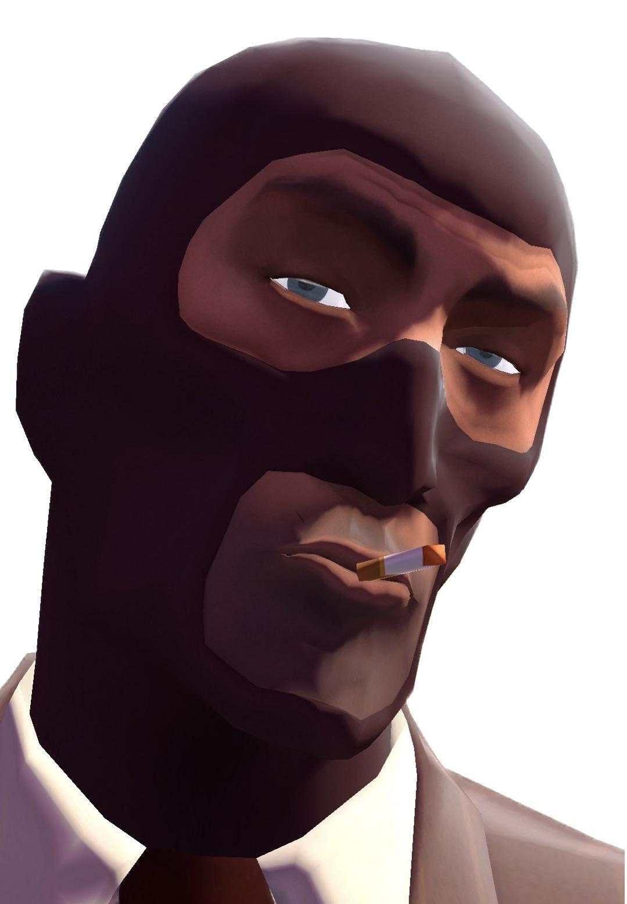

MEET MR. GOODMAN!!!
Click here to go back

Arch nemesis and twin brother of Mr. Badman. Originally debuted on the label as the lead vocalist of the Wee-Sirs band, but since it disbanded, he was never the same. He went off the deep end and got addicted to male prostitutes and DXM. Since then, he has NOT changed at all, but he now makes music, so good enough I guess. My cousin used to groom children on Roblox.
Contact Mr. Goodman: N/A